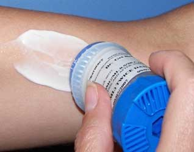

Most women experience some form of hormone-related health condition during their lifetimes. For many, help comes in the form of Bio-Identical Hormone Replacement Therapy (BHRT). Traditionally, women have used synthetic estrogens and progestin supplements to treat menopause symptoms or to protect against osteoporosis and heart disease. While these hormones often help relieve some menopausal symptoms, they also have many unpleasant side effects. Most recently, studies have shown that these synthetic hormones can also increase the risk of heart attack, stroke and certain forms of cancer.
Many patients and doctors are turning to BHRT, which attempts to mimic the normal human estrogen levels using natural products derived from soy or yam. Progesterone and testosterone are also very important in hormone replacement therapy. BHRT is used for the treatment of symptoms due to menopause.
Ever since the now infamous World Health Initiative study came to a grinding halt in 2002, skittish physicians, fearful of putting their patients at an increased risk for breast cancer, coronary heart disease or stroke, have been reluctant to prescribe hormone replacement therapy for their patients. Likewise, frightened women have avoided hormone replacement therapy for fear of developing breast cancer or suffering a stroke.
While the results of the study were certainly noteworthy, two very important points which are not as widely known should be made. First, it was the synthetic progesterone, Provera, which actually proved to be the problem, though not by itself. When Provera was taken with Premarin, an estrogen derived from pregnant horse’s urine (marketed together as Prempro), the women in the study group, all over the age of 60, showed a 24-percent increased risk of breast cancer and heart disease. 
However, the women who started taking hormones before the age of 60, and took estrogen without Provera, had no increased risk of breast cancer. In addition, this same group of women showed 61 percent less calcified plaque of their coronary arteries after five years of using the estrogen than did their counterparts who took only the placebo. This suggests strongly that estrogen plays an important role in protecting against heart disease and breast cancer in women.
Second bio-identical hormones were not used in any of the study groups. This is significant, because there has not been one published study indicating that bio-identical progesterone increases the risk of breast cancer or heart disease. On the contrary, bio-identical progesterone has to be shown to have anticancer effects.
Finally, despite the foreboding results of the study, most researchers still agree that women should not hesitate to use hormone replacement therapy for treating perimenopause and menopause. However, unless you know the difference between synthetic and bio-identical hormones, you may erroneously think that all hormones will put you at risk for health problems, when this is simply not the case.
What Makes Bio-identical Hormones Different?
Many physicians will tell you that synthetic hormones and bio-identical hormones are exactly the same because they are both created in a lab. While it is true that bio-identical hormones, like synthetic hormones, are made in a lab, what is not true is that they are exactly the same. The difference lies in the molecular structure of the hormones.
Bio-identical Hormones are not new
In response to the now known problems with synthetic hormones, modern consumers have been demanding “natural and alternative” treatments for perimenopause and menopause. But it might surprise you to know that bio-identical hormones have actually been around for a very long time. In the late 1930s-early 1940s, a young physical-chemistry graduate student by the name of Russell Marker devised a way to convert a chemical compound, disogenin, found in Mexican wild yams, into a progesterone with the exact molecular structure of the progesterone produced in a woman’s ovaries. What made Marker’s discovery so significant is that prior to this time, progesterone could only be obtained from sows’ ovaries (yes, a pig) or by way of a very complicated and time-consuming laboratory procedure which made it very expensive. With Marker’s method, however, progesterone which looked exactly like the progesterone made in your body could be produced at a cost of fifty-cents per gram, as opposed to a very hefty cost of $80 per gram via the previous methods. It wasn’t long, unfortunately, before pharmaceutical companies discovered that this first bio-identical progesterone could be chemically altered to create synthetic variations which, unlike the natural substances found in nature, could be patented. Since then, the subsequent campaign to sell and market them to physicians and their patients has been fierce and relentless.
How do Bio-identical Hormones Behave in Your Body?
Unlike chemically-altered synthetic hormones, bio-identical hormones contain the same molecular structure as those produced naturally by your body. As a result, your body “recognizes” these hormones and interacts with them in the same way it would interact with the hormones produced in your ovaries – like a key fitting properly in a lock. Bio-identical hormones are the key which fits perfectly into our body’s hormone receptors, the lock. Once in place, our bodies shift back into balance and all of those nasty symptoms of hormone imbalance begin to subside. Synthetic hormones, on the other hand, have chemically altered shapes which are not recognized by your body. Furthermore, they are not metabolized efficiently in the body and interfere with the normal ebb and flow of hormonal function, potentially causing detrimental side effects. So, while the pharmaceutical companies and some physicians would have you believe that bio-identical hormones are the same as synthetic hormones, they are not. Synthetically-produced hormones are not real hormones; they are man-made drugs which wreak havoc in your body.
Bio-Identical Hormones' Safety and Effectiveness
But there is good news. More and more research is being done on the safety and effectiveness of bio-identical hormones. Though it takes time, the evidence continues to mount in favor of bio-identical hormone therapy, proving they are a safe and effective choice for women seeking relief from perimenopause and menopause symptoms.